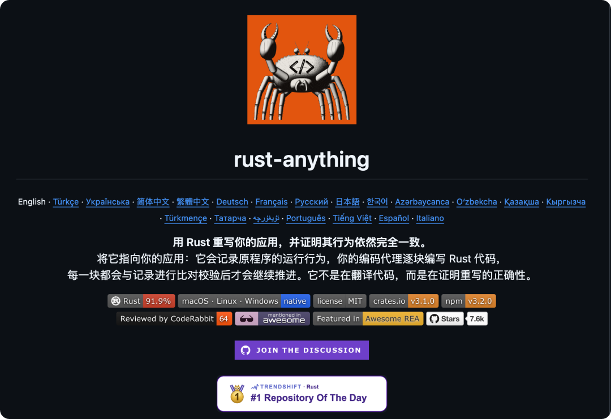
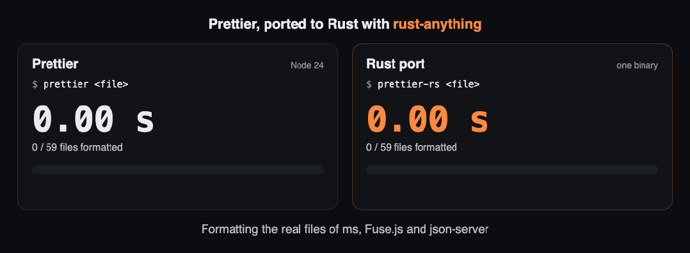
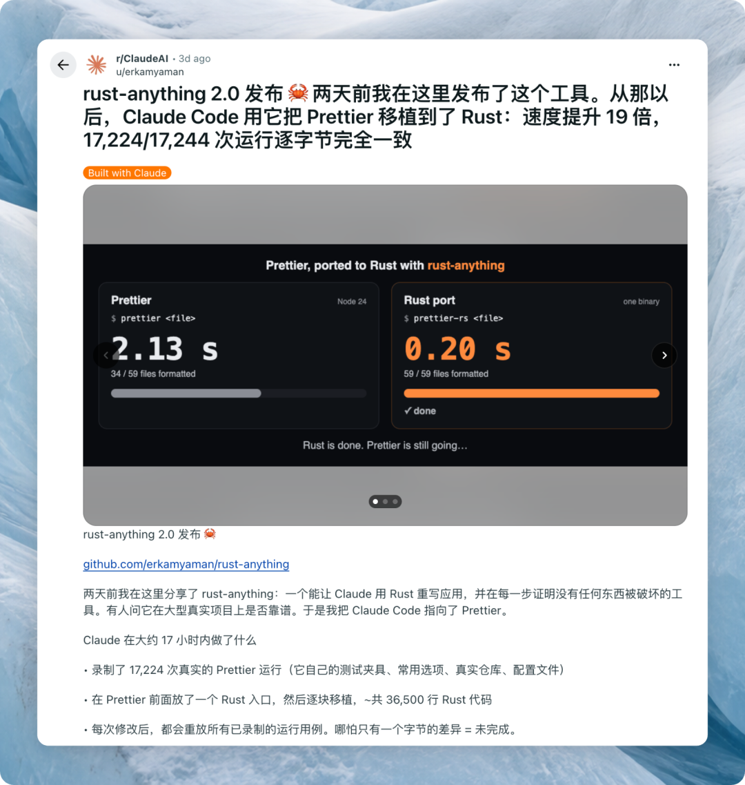
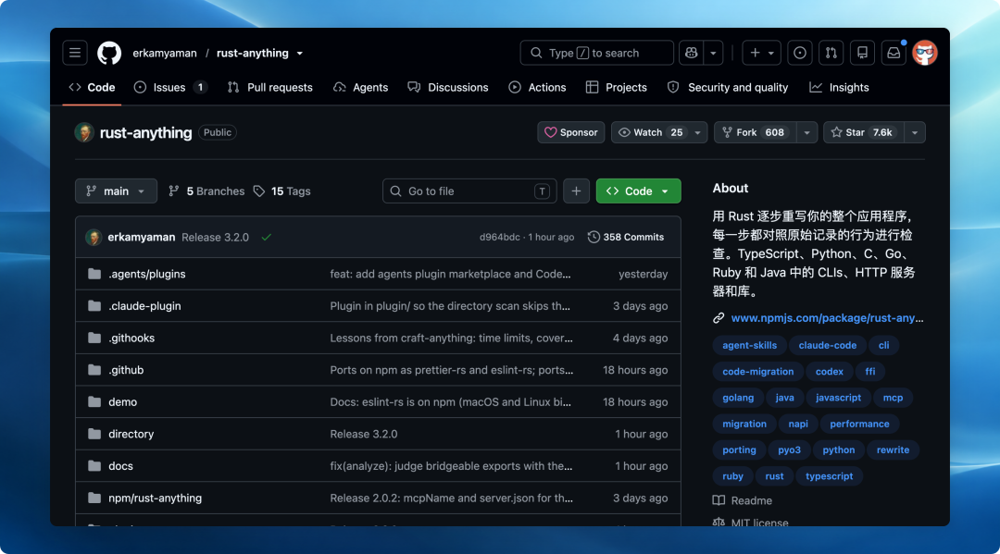
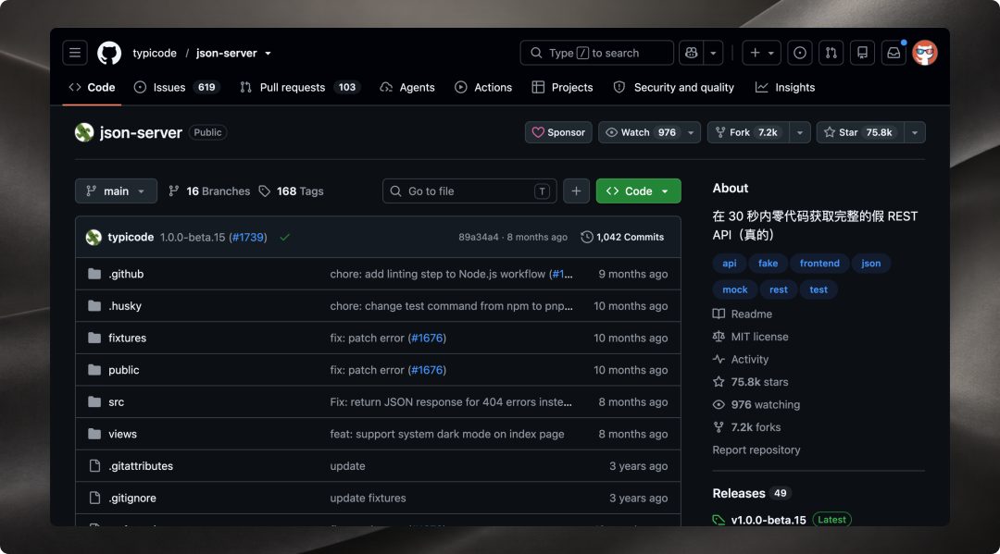
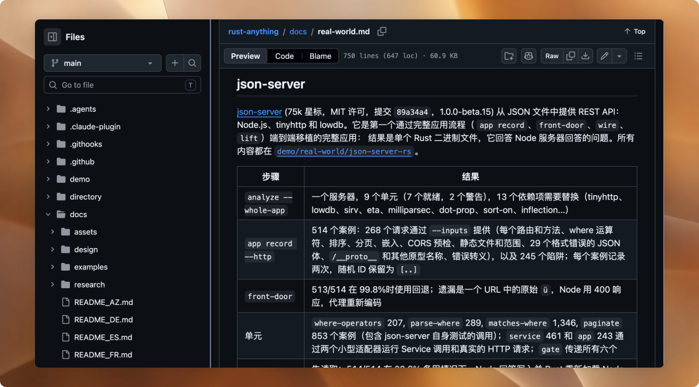
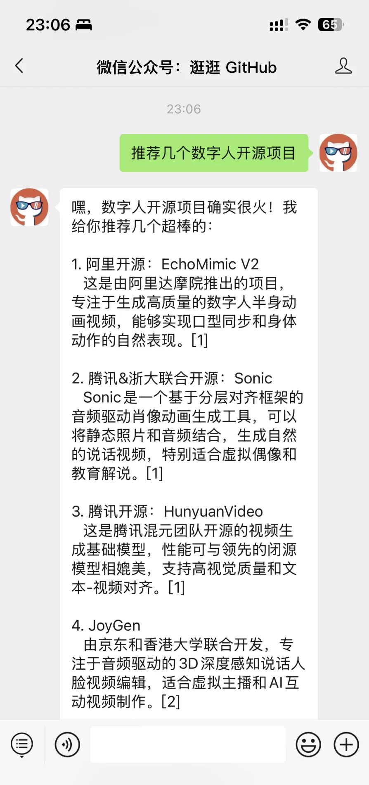

GitHub 上开源不到 7 天拿下 7000 Star，让 AI 给旧项目性能提速。
查看微信原文 ↗最近的开源热榜上，有个新项目涨星挺快的。
开源还不到一周，就在 GitHub 上拿了 7000 多个 Star。
它叫 rust-anything。

Rust 是一门常用来写高性能软件的编程语言。
如果一个老工具里有段代码特别慢，可以尝试着把那一段用 Rust 重写。
可能会快不少呢。
这个项目的作者就用 Claude Code 花了约 17 小时，把代码格式化工具 Prettier 分批迁到 Rust。
同样是逐个启动命令行程序来格式化两千多个文件，原来要两分多钟，迁完只用了约 7 秒。

rust-anything 就是他用来做这次迁移的工具。
它能帮你先挑最慢的一块改，改完再跟原版对一遍，看看结果和速度快了多少。

01
开源项目简介
如果你有一个 Python、JavaScript 或 Go 写的老项目，觉得性能很慢。
可以先让 Claude Code 用 rust-anything 找出哪段代码跑得最慢。
然后选定要迁的部分后。
rust-anything 会用一批测试输入跑你原来的代码，记录下它返回什么、在哪些情况下报错。
等 Claude Code 写完 Rust 版，会再把同样的输入进行测试，逐条比对结果。

就比如上面提到的 Prettier 这个工具的移植。
Rust anything 重置后。
用最新的版本重新跑了约 1.7 万条用例，每条都和原版逐字节对上。
但是从性能上来讲，原版大概 128.6 秒，新版只需要 6.9 秒了。快了 19 倍。
还有一个案例。
就是重构 json-server 的，这是能够用一个 JSON 文件在本地快速搭建模拟的 RESTful API 服务器。

基于 rust-anything 迁了整个服务。
这个原本用 Node.js 跑的工具，改完可以打包成一个独立的 Rust 程序。
拿 514 条录制好的 HTTP 用例来测试，结果全部对上了。
而且空闲时的内存占用也从 74 MB 降到了 3.5 MB。
效果还是超级明显的。

还有就是对 x18n 进行 rust-anything 重构。
把部分迁移成 rust 实现。
这个工具的侧栏得在 5 万个条目里做搜索，把搜索代码搬到了 Rust。
配合索引和多核批处理，单次查询从约 10 毫秒降到了半毫秒。
02
如何安装使用
电脑上已经装了 Cargo 的话，在终端运行下面两条命令。
cargo install rust-anythingrust-anything setup
也可以先用 npm install -g rust-anything 安装。
再运行 rust-anything setup。
配置好以后，重启 Claude Code 或 Codex，再打开要迁的项目。
开始迁移时，电脑要能编译 Rust，也要能运行原项目，工具才能把两版都跑起来做比较。
可以先挑一个平时觉得慢的操作，比如搜索或者批量处理文件。
把平时运行这个操作的命令交给 Claude Code 或 Codex，然后对它说。
用 rust-anything 跑一次这个操作，看看时间主要花在哪。先把最耗时的一个模块迁到 Rust，再用同一批输入比较新旧两版的结果和耗时。
开源地址：https://github.com/erkamyaman/rust-anything03
点击下方卡片，关注逛逛 GitHub
这个公众号历史发布过很多有趣的开源项目，如果你懒得翻文章一个个找，你直接关注微信公众号：逛逛 GitHub ，后台对话聊天就行了：
